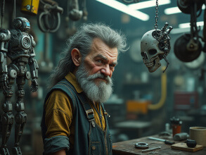

Micro Specialist
Code Name: Payload
Filename: Rémi Lacroix
Specialty: Hacking, computer security
Birthplace: Bagotville
Payload was born with dwarfism but he never let that stop him from ataining his goals by developping skills in data forensics, information security and Artificial Intelligence. His parents are well off and were always able to provide Payload with all the machines he wanted, in part to compensate for the lack of emotional support they could not provide their son in his unfortunate physical condition.
Payload is somewhat of an introvert who compensates for his social inadequacies by overcompensating by reaching the highest levels of skills in other domains. His highly specialized skills prove useful to people in high places, bringing him into contact with powerful people who require men of his caliber to reach the heights of their ambitions.
(referal quote)